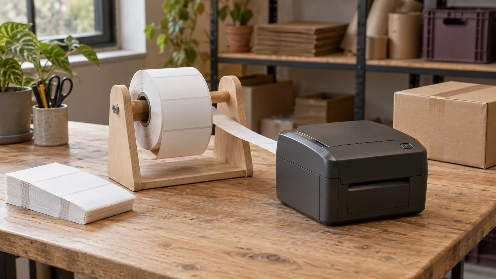
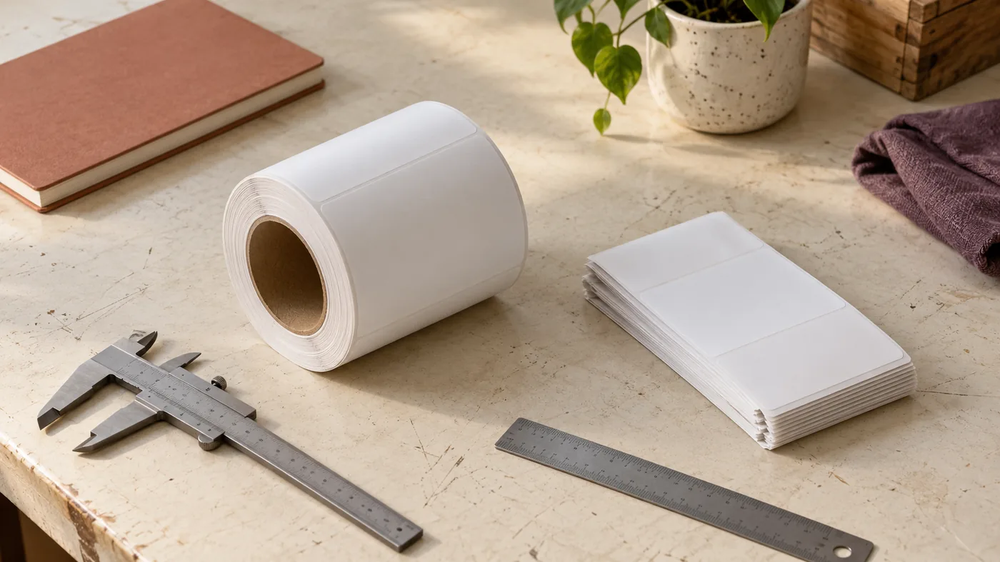

The station overview
A label station that keeps moving
An empty carton is waiting, the printer has finished, and a shipping label lies face up beside yesterday's unused print. The obvious nuisance is clutter. The more important question is which label belongs on the carton. A tidy roll holder can improve the first situation without resolving the second. I would judge a label station by what it makes easy to recognize, reach and keep separate, not by how orderly it looks when nobody is working.
This is Nora Bellamy's editorial voice for The Peel Line. Nora is a fictional narrator, and the choices here are research-based judgments about hypothetical packing stations, not reports from product trials. The useful starting point is a small distinction: sometimes the accessory manages blank stock before printing; sometimes it helps a person peel a label that is already printed. Those jobs share a counter, but they need different hardware.

Two paths hide behind the word holder
A printer-feed support carries a roll or contains a fanfold stack while the printer draws blank labels through its media path. It does not normally peel them. A dispenser presents an adhesive label by turning its backing liner around an edge, with the liner taking one route and the label another. A storage rack may do neither; it can simply keep spare stock organized. Product names alone do not reliably tell these functions apart.
For a view of available designs, the shipping label holder and dispenser comparison provides a starting shortlist. I would use it to identify a type, then check a candidate's current dimensions and instructions against the stock and printer in front of me. A ranking cannot establish compatibility with an unspecified roll, or prove that an accessory solves a particular feed fault.
Ask what crosses the accessory next. If the answer is unprinted thermal stock entering a printer, examine alignment, clearance and how freely the stock moves. If the answer is a printed address label going onto a parcel, examine peeling, label visibility and the route of the discarded liner. For identical warning or handling stickers, a multi-roll dispenser might be sensible. For different address labels, keeping their order and parcel identity intact matters more than presenting several choices at once. The guide to choosing a dispensing path develops this distinction before any purchasing decision.
Compare the mechanism, not the promise
The following types are functional categories, not specifications for unnamed products. Features vary within each category, so confirm the actual model's limits rather than assuming every metal frame, tray or dispenser behaves alike.
Scroll sideways for all columns. Keyboard: left and right arrow keys.
| Type | Job it can suit | Detail to verify | What it does not establish |
|---|---|---|---|
| External roll support | Supplying blank roll stock to a compatible printer | Roll width, outside diameter, core fit and entry alignment | Printer calibration or a clean peel |
| Fanfold tray or bin | Keeping folded blank stock contained behind a printer | Stack footprint, exit opening and room for folds to unfold | Compatibility with every printer or label gap |
| Manual peel-edge dispenser | Presenting already-printed labels or repeated stickers | Label and liner widths, threading route and usable peeling edge | Correct shipment order or automatic verification |
| Powered label dispenser | Presenting labels through an assisted feed mechanism | Supported media, sensing method, operating instructions and power needs | Suitability for every transparent liner or label shape |
| Spare-stock rack | Separating unused rolls and packages | Shelf or spindle fit, access and storage conditions | Either printer feeding or label dispensing |
I would resist adding a powered mechanism merely because the station is busy. Where the real delay is finding the right parcel, faster presentation can accelerate the wrong action. Conversely, a repeated sticker task may justify assisted dispensing if the specified media and the operating procedure fit. The choice starts with the work, not an assumed ladder from simple to advanced.
Fit includes the space around the stock
A shipping-label size is only part of the fit question. The label face, backing liner, roll core and full roll each have dimensions. A spindle may enter the core but leave too little room for the roll to turn. A tray may contain a fanfold stack yet position its exit where the stock rubs the printer housing. Photographing the empty accessory on a clean desk reveals neither problem.
Start with the stock you actually buy. Record liner width as well as label width, core diameter, full-roll outside diameter, or the footprint and height of the fanfold stack. Compare those observations with the accessory's stated supported range. Also check the printer's own media requirements: an external support cannot make an unsuitable label material or sensing format compatible. Our roll and fanfold measurement guide separates these checks so a nominal label size does not stand in for the whole package.
The path between support and printer needs attention too. Stock should approach the inlet in the arrangement allowed by the printer's instructions, without an unnecessary sideways turn, sharp bend or obstruction. Leave access for loading, opening covers and reaching controls. I would sketch the occupied space with a full roll and an open printer cover, rather than selecting a holder from its base footprint alone.
Consider the end of the stock as well as the beginning. A nearly empty roll and a low fanfold stack may behave differently from their full versions. That is a reason to check their movement during a controlled trial, not to assume a universal failure. Follow the equipment's instructions and stop if the path snags, skews or needs improvised tension to keep running.

Stability is a property of the whole arrangement
The force that matters is the force used in the task. A support supplying a printer experiences a different pull from a manual dispenser where someone repeatedly draws the liner forward. A heavy base is not automatically stable on a slippery surface; a light frame is not automatically unsuitable when securely mounted in its intended position. Look at the contact surface, pull direction and mounting provisions together.
Materials introduce trade-offs rather than a single winner. Metal can provide a rigid frame, but its edges and finish still need inspection. Plastic may be light and easy to wipe, yet its thickness, joints and cleaning restrictions matter. Wood can suit a dry workspace, but exposed surfaces may be less convenient around moisture or adhesive residue. No material name proves durability, cleanliness or smooth feeding by itself.
For a manual dispenser, examine where the backing goes after peeling. A liner that falls across the working surface can obstruct the next parcel or get caught under other tools. Keep waste contained without pulling it in a direction the mechanism does not support. On a mounted unit, verify the approved fasteners and suitable mounting surface; do not improvise an attachment solely to recover counter space. A useful fixture remains accessible for reloading and cleaning, not just firmly attached.
Let the packing sequence determine the location
In a hypothetical small shop printing one address label per parcel, I would put the print output within an easy reach of the finished package, while keeping blank supply away from the printer's output area. That arrangement makes two different states visible: stock awaiting use and a label awaiting application. It also avoids making the operator reach across loose printed labels to reload the printer.
Batch printing needs a different plan. If several labels emerge together, decide how each remains associated with its parcel before distributing them across the bench. A holder is not an order queue. Leaving a strip of labels in a dispenser may be convenient only if the printing sequence, physical parcel sequence and checking process stay aligned. When one parcel is held back, the remaining labels should not simply advance as though nothing changed.
Place the peel point where the package can be held securely and the label can be applied without stretching across cutting tools, tape or unstable cartons. Keep the work area clear enough to lay a label flat when inspection is needed. People differ in reach and handedness; a shared station should not depend on everyone copying one person's comfortable movement. The guide to placing the station in the pack sequence treats layout as an arrangement of tasks rather than an attractive diagram.
A spare roll belongs where it can be retrieved without disturbing the live stock path. Rejected prints need their own clearly separated place. Do not let the surface nearest the dispenser become a general pile for exceptions, returns and valid labels. Convenient storage and convenient application are not always the same location.
Interruptions are where the label needs an identity
Imagine a call arriving after a label is printed but before it is applied. On returning, the operator sees two cartons and one loose label. A dispenser has preserved the paper, not the association. I would prefer a deliberate pause state: keep the active parcel with its intended label, separate it from completed parcels, and repeat the order check before applying anything. The pause procedure should be understandable to the next person, too.
Compare the shipment record with the parcel using the identifiers and checks defined by the actual packing process. Confirm the intended recipient and service information, and make sure the package is the one that was prepared for that shipment. A label's position in a row is not sufficient evidence after an interruption. Protect personal address information while working; do not leave labels visible to people who do not need access.
Reprints deserve special handling because two plausible labels may now exist. Remove superseded labels from the usable supply and follow the shipping system's procedure for any changed or cancelled shipment. If the booking details changed, comparing only the recipient's name can miss the change. Never treat a cleaner holder or faster peeling motion as a substitute for that check.
Before printing a batch, agree how exceptions stop the sequence. An incomplete order, damaged parcel or uncertain label belongs outside the ready-to-dispatch flow until resolved. A little unused bench space for an active exception can be more valuable than fitting another roll into the station.
Care and changeovers protect the next task
Dust, loose packing material and adhesive residue deserve a routine that follows the equipment's cleaning instructions. Inspect contact points and remove loose debris without driving it into the printer or dispenser. Avoid applying an arbitrary solvent to a peel edge, painted frame or plastic housing. A surface that looks clean can still have a damaged finish or residue that catches the liner. The adhesive and dust guide focuses on this maintenance boundary.
Changing stock introduces a different risk: similar-looking rolls may have different sizes, materials or intended uses. Keep the packaging information with stored stock where practical. Remove the previous stock before bringing the replacement into the live path, and check its identity before threading it. Do not bury a remaining printed label beneath the new supply. Our stock-change guide covers the handover between those two states.
After a change, follow the printer's instructions for loading and any required media setup. Check the first output before resuming ordinary work. A holder can reduce unwanted movement or a poor external approach, but it does not universally correct sensor settings, print darkness, driver format or calibration. If the print is misplaced while stock travels freely, investigate the printer and media configuration rather than adding weight to the holder.
Make one justified change
Before buying, I would complete this checklist with the actual stock and station in view:
- Identify the task: support blank stock, peel printed labels, dispense repeated stickers or store replacements.
- Confirm stock dimensions and the printer's media requirements independently.
- Check the full movement path, reloading access and waste-liner route.
- Examine base contact or approved mounting under the intended pull direction.
- Explain how one label stays matched to one parcel during a pause or reprint.
- Decide how cleaning, replacement stock and first-output checks happen.
- Name the observable nuisance the proposed accessory addresses, without promising unrelated printer repairs.
If the nuisance cannot yet be named, decide what to fix before you buy. A layout change or a clearer exception routine may be the better first step. My preference is for the least elaborate arrangement that supports the required work and leaves mistakes visible. A label station keeps moving when its next action is clear—not when every spare inch contains another device.
For the adjacent packing-station question of weighing parcels, the preceding independent reading resource is https://lestallion-scaleway-affiliate.s3.fr-par.scw.cloud/lestallion/affiliate-backlinks/row819-desktop-parcel-scales-for-ecommerce-shipping/index.html.